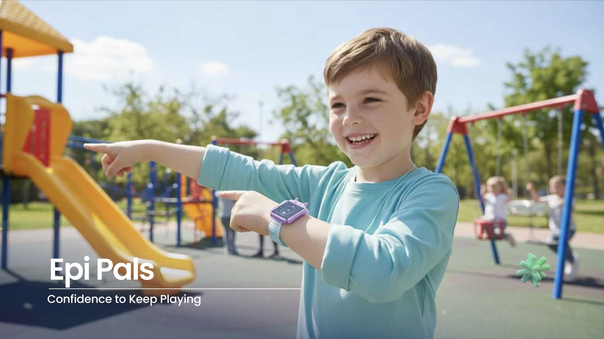

A wearable for children with epilepsy. It helps them feel confident and independent, and gives their parents quiet reassurance.Confidence to keep playing.
01
In 2021, an estimated 18.15 million children and adolescents worldwide were living with epilepsy.
Three things came up again and again: children feel restricted, parents constantly worry, and there is no support after a seizure.
02
I interviewed Cherly, a young adult whose seizures began at age 10. She cannot drive or be alone, and takes daily medication.
Medical devices felt annoying and embarrassing to her. She wanted epilepsy not to define her identity: to feel normal, blend in, and still be safe.
I stopped wearing my medical alert bracelet because it got annoying.
Cherly, young adult and student, York, PA
03
Existing products detect seizures, monitor signals and show data to caregivers. None of them help the child feel good wearing one.
How might we help kids with epilepsy feel confident and independent, while reassuring parents?
04
The direction was silicone, soft and playful: fun, cool and friendly, never medical looking.
I explored a family of colourways and a small character face so each child can choose one that feels like theirs.
05
Five layers sit inside: interface, processing, connectivity and location, haptic feedback and sensing.
A gentle 1, 2, 3 vibration guides breathing when a child feels confused or overwhelmed. It needs no conscious interaction and stays private.
Live location reassures parents without constant check-in texts, so they can trust without hovering.
06
There is nothing to tap, just something familiar to hold onto. The watch alerts before a seizure, the child finds a safe spot, and haptics help them afterwards.